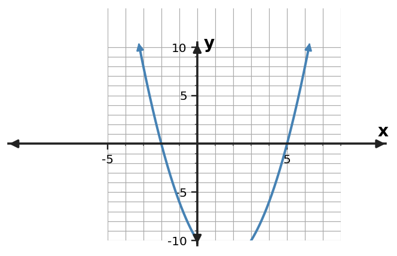

1. For $y=(x+6)(x-2)$, determine the zeros and $x$-intercepts.
2. For $y=(x+6)(x-7)$, determine the zeros and $x$-intercepts.
3. For $y=(x+7)(x-5)$, determine the zeros and $x$-intercepts.
4. For $y=(x-4)(x-8)$, determine the zeros and $x$-intercepts.
5. A monic quadratic has zeros $x=-4$ and $x=9$. Write it in factored form.
6. A monic quadratic has zeros $x=-8$ and $x=2$. Write it in factored form.
7. A monic quadratic has zeros $x=1$ and $x=8$. Write it in factored form.
8. A monic quadratic has zeros $x=-2$ and $x=10$. Write it in factored form.
9. Solve $(x+6)(x-3)=0$.
10. Solve $(x-5)(x+4)=0$.
11. Solve $(x+1)(x-9)=0$.
12. Solve $(x-2)(x-7)=0$.
13. Use the quadratic table to identify the zeros and write a monic factored form.
| $x$ | $y$ |
|---|---|
| $-5$ | $0$ |
| $-4$ | $-10$ |
| $-3$ | $-18$ |
| $-2$ | $-24$ |
| $-1$ | $-28$ |
| $0$ | $-30$ |
| $1$ | $-30$ |
| $2$ | $-28$ |
| $3$ | $-24$ |
| $4$ | $-18$ |
| $5$ | $-10$ |
| $6$ | $0$ |
14. Use the graph to identify the zeros and write a monic factored-form equation.

15. A quadratic has zeros -5 and 1 and passes through $(0,15)$. Determine $a$ in $y=a(x+5)(x-1)$.
16. A quadratic has zeros -2 and 6 and passes through $(0,24)$. Determine $a$ in $y=a(x+2)(x-6)$.
17. A quadratic has zeros 1 and 7 and passes through $(0,21)$. Determine $a$ in $y=a(x-1)(x-7)$.
18. A profit model is $P(t)=-(t-6)(t-12)$, where $t$ is weeks after launch. When does the model predict zero profit?
19. A height model is $h(t)=-4(t+1)(t-7)$. One algebraic zero is $t=-1$. Which zero is meaningful for time after launch, and why?
20. A student says the zeros of $y=(x+6)(x-8)$ are 6 and -8. Diagnose the sign error.
21. Without expanding, state where $y=2(x+5)(x-9)$ crosses the $x$-axis.
22. Write a factored-form quadratic with zeros -7 and 7 and leading coefficient 2.
23. Compare $y=(x+5)(x-8)$ and $y=3(x+5)(x-8)$. What key intercept feature stays the same?
24. The table shows two zeros. What factor must correspond to each zero in a factored form?
| $x$ | $y$ |
|---|---|
| $-6$ | $0$ |
| $5$ | $0$ |